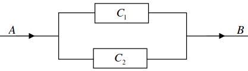

BTS - Maths+STI - TD Probabilités
Alain fabrique, en amateur, des appareils électroniques. Il est aussi très anxieux et a décidé de calculer toutes les probabilités pour vivre sa passion.
Partie A
Chez son fournisseur de composants électroniques, la durée d'attente \(T\) en caisse, exprimée en minutes, suit une loi exponentielle de paramètre \(\lambda = 0,08\).
On rappelle que la densité associée à la loi exponentielle est définie sur \([0,+\infty[\) par \(f(t)=\lambda \textrm{e}^{-\lambda t}\), et que l'espérance de cette loi est \(\frac{1}{\lambda}\)
- À quelle valeur remarquable correspond \(f(0)\) ? Indiquer \(\lambda\) sur le graphique.
- Démontrer que l'équation de la tangente à la courbe de \(f\) en \(t=0\) est \(y=\lambda-\lambda^2 t\).
- En déduire que \(x(B)=\frac{1}{\lambda}=E(T)\), et que sa valeur est 12,5.
- En moyenne, combien de temps devra attendre Alain ?
- Quelle est la probabilité qu'Alain attende moins de cinq minutes ? Hachurer la zone correspondante à cette probabilité sur le graphique.
- Sachant qu'Alain attend depuis 10 minutes, quelle est la probabilité qu'il paye dans les 5 minutes qui suivent ?
Partie B comme bin...
Alain achète des composants ayant tous une apparence identique, mais dont certains présentent un défaut. On estime que ce défaut concerne \(1,8\%\) des composants vendus.
On admet que le nombre de composants vendus est assez important pour que l'achat de 50 composants soit assimilé à un tirage avec remise.
- En moyenne, combien de composants sont défectueux dans un lot de 50 ?
- Quelle loi de probabilité utilise-t-on pour modéliser cette situation ? Préciser ses paramètres.
- Quelle est la probabilité qu'aucun composant, dans un lot, ne soit défecteux ? Même question pour un composant seul ? Même question pour exactement 4 composants ? Pourquoi cette dernière probabilité est-elle élevée ?
- Quelle est la probabilité pour qu'au plus 10% des composants d'un lot soient défectueux ?
Partie C
Les montages électriques sont équipés d'une batterie qui (dans une cadre d'une utilisation normale), a un temps de bon fonctionnement \(T\), en années, qui suit une loi normale de moyenne 6 ans et d'écart-type 1 an.
Écrire la réponse sous la forme \(P(\cdots\leqslant T\leqslant\cdots)=\ldots\) pour chaque question :
- Quelle est la probabilité qu'une batterie dure entre 4 et 8 ans ?
- Quelle est la probabilité qu'une batterie dure plus de 9 ans ?
- Quelle est la probabilité qu'une batterie dure moins de 2 ans ?
- Quel devrait être l'écart-type pour que plus de \(99\%\) des batteries durent entre 4 et 8 ans ?
Partie D
Arrondir les résultats au millième.
Dans le montage électrique, il y a deux composants critiques \(A\) et \(B\). On notera \(A\) l'événement : «le composant \(A\) fonctionne» et \(\overline{A}\) le complémentaire. De même pour \(B\). Après analyse de 100 montages, on dénombre :
- 3 montages avec \(A\) défecteux seul.
- 5 montages avec \(B\) défecteux seul.
- 2 montages avec \(A\) et \(B\) défecteux.
- Compléter le diagramme ci-dessus avec les nombres donnés.
- En admettant que l'étude statistique permet d'établir un modèle probabiliste, donner \(P(\overline{A})\), \(P(\overline{B})\) et \(P(\overline{A}\cap\overline{B})\).
- En déduire que \(P(A)=0,95\), \(P(B)=0,93\) et \(P(A\cup B)=0,98\), puis \(P(A\cap B)=0,9\).
- Les événements \(A\) et \(B\) sont-ils indépendants ? Justifier.
- On rappelle que \(P_A(B)=\displaystyle\frac{P(A\cap B)}{P(A)}\).
Réaliser deux arbres représentant la situation (l'un avec \(A\) et \(\overline{A}\) au premier étage, l'autre avec \(B\) et \(\overline{B}\) au premier étage).
Partie E
Pour étudier le design du circuit, on a le choix entre trois montages différents :
- Montage \(M_1\) :

- Montage \(M_2\) :

- Montage \(M_3\) :
On note \(p_i\) la probabilité de défaillance du composant \(C_i\).
On admet que les événements \(\overline{C}_i\) : «le composant \(C_i\) est défaillant» sont tous indépendants (2 à 2) ; en cas de défaillance, chaque composant se comporte comme un interrupteur ouvert ; sinon, il laisse toujours passer du courant.
On admet qu'un montage est fonctionnel lorsque le courant peut aller de A à B.
- Pour chaque montage \(M_j\), calculer sa probabilité \(P_j\) de fonctionnement en fonction des \(p_i\). En cas de difficulté, on pourra considérer que tous les \(p_i\) valent une même valeur \(p\).
- On considère que tous les \(p_i\) valent une même valeur \(p\).
Tracer sur \([0,1]\), en fonction de \(p\), les 3 fonctions \(P_j\).
- Selon les valeurs de \(p\), discuter du montage le plus robuste.